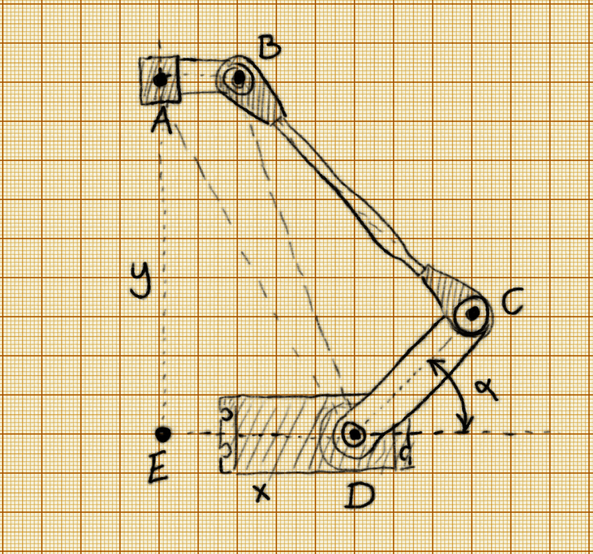

Inverse Kinematics¶
Published on 2017-03-18 in Deltabot.
Inverse kinematics for delta robots seem to have an opinion of being very complex and un-intuitive. I don’t really understand why, because to me they seem to be simpler then for most other robot arm configurations. Perhaps I’m missing something.
Let’s split the problem in two parts. First, let’s just look at 1/3 of the robot, a single “arm” of the delta:
We only have one degree of freedom here: the angle α. That’s our output, what we need to calculate. And we only really have one input: the distance AD between the business end of the robot and the base of the servo. We also know all the mechanical dimensions of the robot: AB, BC, CD, DE. So how can we calculate α? From the law of cosines , of course! Given a triangle with dimensions a, b c, the law of cosines lets us calculate the angles of that triangle:
\(\color{White} \large \gamma = \arccos \frac{a^2+b^2 - c^2}{2ab}\) Where γ is the angle opposite c. Also, we will actually calculate 180°-α, which is a sum of three angles:
ADE, ADB and BDC. So we have:
$\color{White} \large ADE = \arccos\frac{DE}{AD}$ \
\(\color{White} \large BD = \sqrt{AD^2 - ED^2 + (ED - AB)^2}\) \(\color{White} \large ADB = \arccos\frac{AD^2 + BD^2 - AB^2}{2\times AD \times BD}\)
\(\color{White} \large BDC = \arccos\frac{BD^2 + CD^2 - BC^2}{2\times BD\times CD}\) And finally:
\(\color{White} \large \alpha = 180\degree - ADE - ADB - BDC\) That’s it. That’s the position the servo needs to move to. All we need to know is the distance AD. How can we know that distance for each of the arms? That’s very simple! It’s just the distance between the point we want our robot to move to, (x, y, z), and the base of the given arm, (x₁, y₁, z₁), which we know (we can measure them or calculate from the distance ED and the angle of the given arm).
\(\color{White} \large AD = \sqrt{(x-x_1)^2 + (y-y_1)^2 + (z - z_1)^2}\) Applying all this math should let us move the robot to the coordinates we desire.